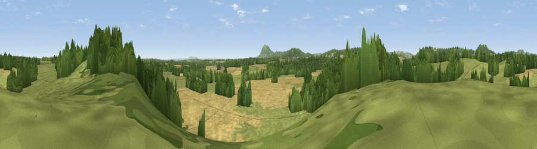

Viewpoint near Broadwas
#29758 in England · top 73% of its area beats it · near BroadwasWhere it is
The exact computed spot (SO 76575 55575). Click the marker for map links.
The view, rendered

A 360° render of this exact spot computed from the terrain model, tree cover and land cover — summer colours, afternoon light, calibrated against photographs of famous viewpoints. Real trees, hedges and buildings will differ in detail.
The panorama
Grey silhouette: terrain skyline in each direction (720 bearings, Earth curvature and refraction included). Dashed green: skyline with trees (+15 m) and buildings (+8 m) as obstacles. Blue strip: how far the ground is visible on each bearing.
Where the view opens
Wedge length = distance to the farthest visible ground on that bearing (vegetation-aware). Rings at 10, 25 and 50 km.
What fills the view
46% grassland · 32% cropland · 21% woodland ·
Angular shares of the visible panorama (visual magnitude), not map area. Landscape diversity 0.48 (0–1 Shannon).
Key numbers
More beautiful places nearby
The staircase of upgrades: each row has a higher view potential than everything closer. Driving times are estimates from straight-line distance, calibrated against real road routing — check an actual route before setting out.
| Place | Direction | Drive | Score |
|---|---|---|---|
| Viewpoint near Broadwas | ENE · 0 km | ~1 min | 48.6 |
| Viewpoint near Brockamin | S · 3 km | ~7 min | 50.8 |
| Ankerdine Hill | WNW · 3 km | ~7 min | 72.6 |
| Viewpoint near Martley | NW · 4 km | ~9 min | 78.1 |
| Viewpoint near West Malvern | S · 9 km | ~17 min | 81.4 |
| Viewpoint near Great Witley | N · 9 km | ~18 min | 83.4 |
| North Hill | S · 9 km | ~18 min | 86.8 |
| Worcestershire Beacon | S · 10 km | ~20 min | 87.1 |
52.19791, -2.34414 · source: screening · position refined by local search. Computed location — check access rights before visiting.